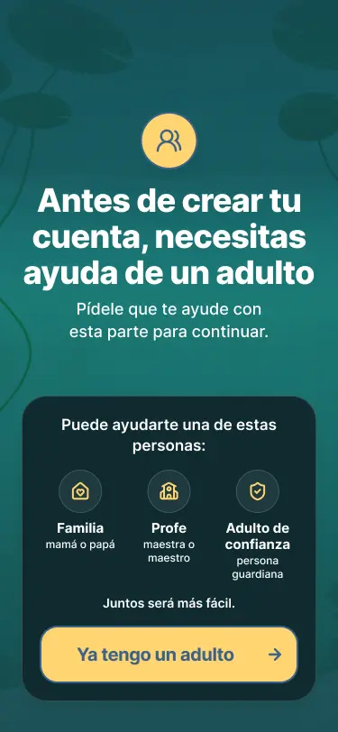
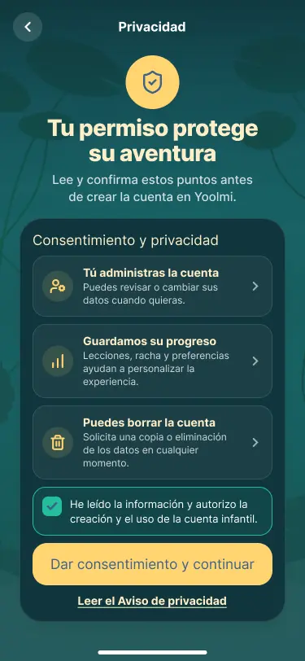

01Learning independently
- Working assumption
- The current interface proposes a route a child can follow.
- Investigate
- Observe how a learner starts an activity and when they need help.
- Possible design change
- Adjust instructions, pacing and support.
A first encounter with Mexican Sign Language.
I’m designing the interface while investigating who the product should serve and what learning need it can meaningfully address.
Dogo Creative Studio + Fatima & Anapau


Fatima and Anapau started Yoolmi with the ambition of making LSM learning more accessible. I joined later through Dogo Creative Studio, working alongside the founders, two developers and a 3D artist.
These screens show the current visual direction and interaction structure. They are design snapshots; their usability and learning impact still need to be tested.
Account creation and recovery also shape the experience. These proposed states explore adult involvement, consent and a way back after a login error.



The current interface is a starting point. I’m investigating the learning context before treating its underlying assumptions as product requirements.
My contribution: UX/UI and flows. Original concept: Fatima and Anapau. Development: Joan and Daniel. 3D: Arael. Character and environment artwork belong to the project team.